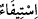

mazereti yoktur.
Burada, mâsiyetlerin iyice belirginleştiği bir beldeden hicret etmeye teşvik vardır. Bir
hadiste “Dini için bir yerden başka bir yere firar edene cennet vâcib olmuştur.”[82]
diye vârid olmuştur. Rivâyette “dîni için” buyrulması, dünya sebebiyle ve dünya için
firarı -özellikle de hicret edilen yer geldiği yerden daha isyankâr olması durumunda-
dışarıda bırakmak içindir.
et-Te’vîlâtü’n-Necmiyye’de der ki: “Allah celâl hazretinin/makamının nihâyeti
olmadığına işâret etmektedir. Onun için hiçbir Allah tâlibi kendisine açılan müşâhede
ve mükâşefe kapılarına aldanıp da en yüksek gayeyi elde ettiği ve en ileri noktaya
ulaştığı vehmine kapılmasın! Çünkü Allah’a yakınlık makamlarının bir nihâyeti ve
vuslat mertebelerinin bir sonu yoktur.”
Mesnevî’de der ki:
Ey kardeş, burası nihâyetsiz bir dergâhtır.
Nereye ulaşırsan sakın durma.
“Yalnız sabredenlere,” dinleri üzere sabır ve sebat gösteren, uğradıkları
işkencelerden ötürü dinlerini terk etmeyen, dînin sınırlarını koruyup kollayan,
aralarında âilelerinden ayrılma ve vatanlarını terk etmenin de bulunduğu türlü elem ve
belâların başlarına gelmesi durumunda bile dinlerinin hukukuna riâyette kusur
göstermeyenlere, sabretmelerine karşılık “mükâfatları hesapsız” yâni sayılamayacak ve
sınırlanamayacak şekilde “ödenecektir.” verilecektir.
el-Müfredât’ta der ki: “__WORD__ bir şeyi tam ve kâmil olarak vermektir. “__WORD__ ise
tam olarak almaktır.
Bir hadîste şöyle buyrulmuştur: “Kıyamet günü namaz, sadaka ve hac sâhipleri için
tartılar kurulur ve bunlara ecirleri tamı tamına verilir. Belalara uğramış olanlar için
ise tartı kurulmaz. Onların ecirleri sağanak hâlinde üstlerine boşaltılır. O kadar ki
dünyada belâlardan âfiyet üzere olanlar bela ehlinin mazhar olduğu bu lütuf ve
ihsâna imrenerek, dünyada iken bedenlerinin makaslarla doğranmış olmasını temenni
ederler.”[83]
Gamlıların sıkıntısına bakma; onlar bu sâyede seçkinler arasındadır.
Yaralarla kederi artan kimseye sevdiği daha çok merhem verir.
Süfyân der ki: “Kim (Allah huzuruna) iyilikle gelirse ona getirdiğinin on katı
vardır.” (el-En’âm, 6/160) âyeti nâzil olunca, Hz. Peygamber (a.s.): “Rabbim,
ümmetime bundan daha fazlasını ver.” buyurdu. Bunun üzerine “Allah yolunda
mallarını harcayanların durumu, yedi başak bitiren bir dane gibidir ki, her başakta
yüz dane vardır.” (el-Bakara, 2/261) âyeti nâzil oldu. Hz. Peygamber (a.s.) yine: